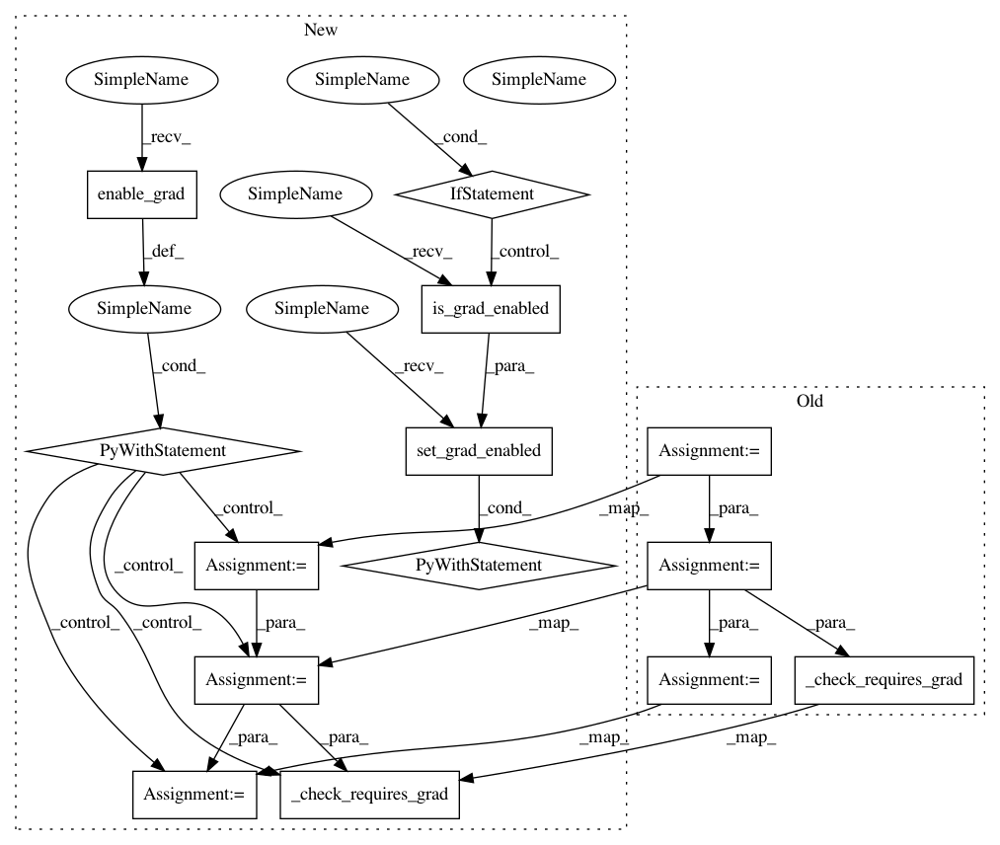

f364e492dfb287e4043d37fffa1bcef55e2ac5dd,torch/autograd/functional.py,,vhp,#Any#Any#Any#Any#Any#,696
Before Change
is_inputs_tuple, inputs = _as_tuple(inputs, "inputs", "vhp")
inputs = _grad_preprocess(inputs, create_graph=create_graph, need_graph=True)
if v is not None:
_, v = _as_tuple(v, "v", "vhp")
v = _grad_preprocess(v, create_graph=create_graph, need_graph=False)
_validate_v(v, inputs, is_inputs_tuple)
else:
if len(inputs) != 1 or inputs[0].nelement() != 1:
raise RuntimeError("The vector v can only be None if the input to the user-provided function "
"is a single Tensor with a single element.")
outputs = func(*inputs)
is_outputs_tuple, outputs = _as_tuple(outputs, "outputs of the user-provided function", "vhp")
_check_requires_grad(outputs, "outputs", strict=strict)
if is_outputs_tuple or not isinstance(outputs[0], torch.Tensor):
raise RuntimeError("The function given to vhp should return a single Tensor")
After Change
tensor([6., 6.])))
with torch.enable_grad():
is_inputs_tuple, inputs = _as_tuple(inputs, "inputs", "vhp")
inputs = _grad_preprocess(inputs, create_graph=create_graph, need_graph=True)
if v is not None:
_, v = _as_tuple(v, "v", "vhp")
v = _grad_preprocess(v, create_graph=create_graph, need_graph=False)
_validate_v(v, inputs, is_inputs_tuple)
else:
if len(inputs) != 1 or inputs[0].nelement() != 1:
raise RuntimeError("The vector v can only be None if the input to the user-provided function "
"is a single Tensor with a single element.")
outputs = func(*inputs)
is_outputs_tuple, outputs = _as_tuple(outputs, "outputs of the user-provided function", "vhp")
_check_requires_grad(outputs, "outputs", strict=strict)
if is_outputs_tuple or not isinstance(outputs[0], torch.Tensor):
raise RuntimeError("The function given to vhp should return a single Tensor")
if outputs[0].nelement() != 1:
raise RuntimeError("The Tensor returned by the function given to vhp should contain a single element")
jac = _autograd_grad(outputs, inputs, create_graph=True)
_check_requires_grad(jac, "jacobian", strict=strict)
enable_grad = True if create_graph else torch.is_grad_enabled()
with torch.set_grad_enabled(enable_grad):
grad_res = _autograd_grad(jac, inputs, v, create_graph=create_graph)
vhp = _fill_in_zeros(grad_res, inputs, strict, create_graph, "double_back")
outputs = _grad_postprocess(outputs, create_graph)
vhp = _grad_postprocess(vhp, create_graph)
return _tuple_postprocess(outputs, is_outputs_tuple), _tuple_postprocess(vhp, is_inputs_tuple)
In pattern: SUPERPATTERN
Frequency: 3
Non-data size: 14
Instances
Project Name: pytorch/pytorch
Commit Name: f364e492dfb287e4043d37fffa1bcef55e2ac5dd
Time: 2021-03-11
Author: ilqarramazanli@gmail.como
File Name: torch/autograd/functional.py
Class Name:
Method Name: vhp
Project Name: pytorch/pytorch
Commit Name: f364e492dfb287e4043d37fffa1bcef55e2ac5dd
Time: 2021-03-11
Author: ilqarramazanli@gmail.como
File Name: torch/autograd/functional.py
Class Name:
Method Name: hvp
Project Name: pytorch/pytorch
Commit Name: f364e492dfb287e4043d37fffa1bcef55e2ac5dd
Time: 2021-03-11
Author: ilqarramazanli@gmail.como
File Name: torch/autograd/functional.py
Class Name:
Method Name: vjp
Project Name: pytorch/pytorch
Commit Name: f364e492dfb287e4043d37fffa1bcef55e2ac5dd
Time: 2021-03-11
Author: ilqarramazanli@gmail.como
File Name: torch/autograd/functional.py
Class Name:
Method Name: vhp